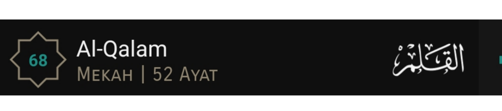

Murrotal Qur'an
"Ini adalah sebuah kitab yang Kami turunkan kepadamu penuh dengan berkah supaya mereka melakukan tadabbur terhadap ayat-ayatnya dan supaya mendapat pelajaran orang-orang yang mempunyai fikiran".
(QS. Shad: 29)
Pilih Surat

Adab Mendengarkan Al-Qur'an
“Apabila dibacakan al-Quran, perhatikanlah dan diamlah, maka kalian akan mendapatkan rahmat.”
(QS. al-A’raf: 204).